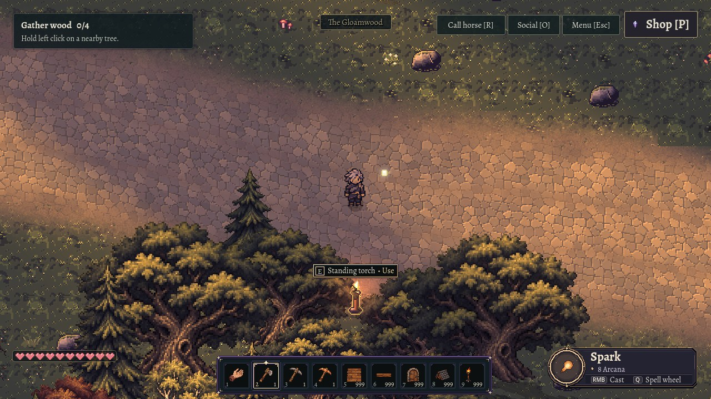

01 / On the mainland
Take the long way home.
Follow the King’s Road over timber creek crossings and through old stone junctions. Stick around for sunset. The stone goes gold and the shadows turn violet.
Want longer shadows and more detail in the trees? Try Depth lighting in Settings. Classic is still the default.